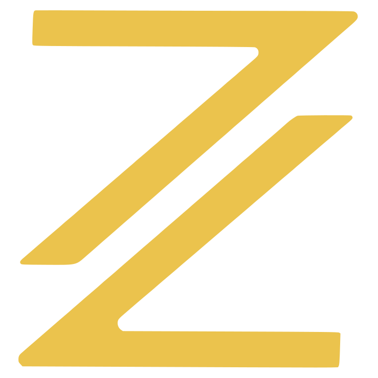

B · Balanced
Same shapes and stagger; the letters about 40% heavier.
Three refinements of the existing logo, drawn as vectors from the original files. All keep the double z, the stagger between "ket" and "tek", and the yellow #ebc34d. For discussion only: nothing changes without ketztek's approval.
The original, traced to vector. Nothing changed.


Same shapes and stagger; the letters about 40% heavier.
The double z on a black tile inside the word: the yellow always sits on black, and the tile is the favicon.